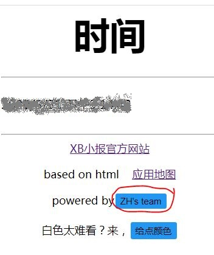
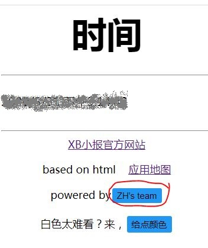
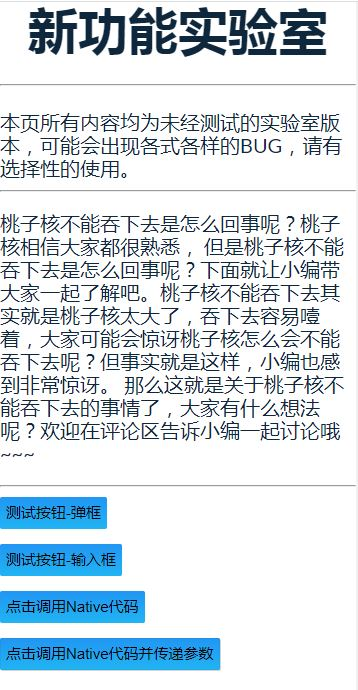
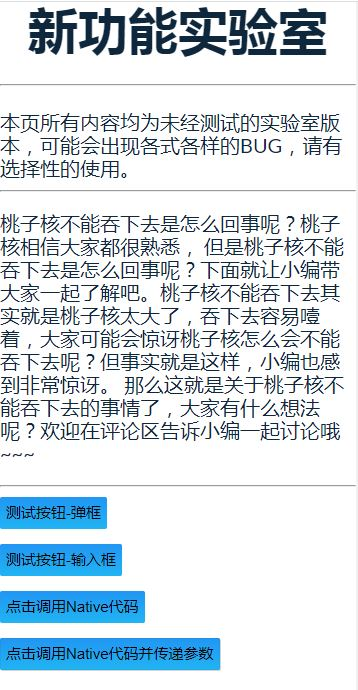

本页帮助包含：当前时间，开发者模式，实验室，须联网的内容，打开撸号大师
当前时间
本页面会获取设备时间，精确到秒
本页面会获取设备时间，精确到秒
开发者模式
进入方法：连续（不连续也行）点击当前时间页面的彩蛋按钮十下进入

使用方法：简单得很，但内容您可能无法进行深入分析，请在ZH指导下使用本功能（百度搜索除外）
进入方法：连续（不连续也行）点击当前时间页面的彩蛋按钮十下进入

使用方法：简单得很，但内容您可能无法进行深入分析，请在ZH指导下使用本功能（百度搜索除外）
实验室
一些ZH正在研究的贼有意思的项目，目前未见BUG（说不定以后会有）

一些ZH正在研究的贼有意思的项目，目前未见BUG（说不定以后会有）

须联网的内容
本应用采用一半联网一半离线模式，为了让您更加深入的了解本应用，特地开发本页面，帮助您合理调配流量使用
本应用采用一半联网一半离线模式，为了让您更加深入的了解本应用，特地开发本页面，帮助您合理调配流量使用
打开撸号大师
由于XB小报由撸号大师更名而来，故有本按钮
由于1.0版本撸号大师与2.0版本撸号大师应用ID不同，故分开启动
如您想体验撸号大师应用，请您前往资源下载中心进行下载~（不支持新版本回滚旧版本，如要回滚，请先卸载新版本）
由于XB小报由撸号大师更名而来，故有本按钮
由于1.0版本撸号大师与2.0版本撸号大师应用ID不同，故分开启动
如您想体验撸号大师应用，请您前往资源下载中心进行下载~（不支持新版本回滚旧版本，如要回滚，请先卸载新版本）